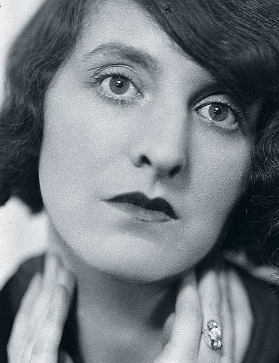

Claire Studer
Piękna i pełna temperamentu Claire Studer/Goll (Klara Aischmann), „femme de lettres” ekspresjonizmu i surrealizmu, ekscentryczna muza artystów.
Poznali się w listopadzie 1918 roku w ogarniętym rewolucyjnym zamętem Monachium. Claire odwiedziła poetę w jego atelier: „Wydawało mi się, że mam przed sobą zjawę Rilkego”. Po kilku dniach zapałali do siebie gwałtownym uczuciem. Rilke będzie ją odtąd nazywał Liliane.
„Czyż zatem roznieciłem w Tobie tak jasne płomienie? Taki pożar serca? Kiedy wieczorami, pogrążony w ciemności, wyciągam przed siebie moje ręce i owieram dłonie, wówczas wznosi się z nich uczucie rozbudzone przez Twój hiszpański szal. I coraz mocniej wierzę, iż szal ten jest niczym czar, w którym nagle zaklęte zostało dotknięcie Twojego ciała i nocy, jako materia utkana ze smutku i czułości” — pisał Rilke w jednym z listów do Claire Studer.
Pozwól, byśmy w tej słodkości ciemnej,
nie poznali, dokąd nasza łza się toczy.
Jesteś pewny, że cierpimy od rozkoszy
albo lśnimy od wypitych cierpień?
— Rilke w wierszu „Rodzeństwo”, wpisanym jako dedykacja dla Liliane (przeł. B. Antochewicz)